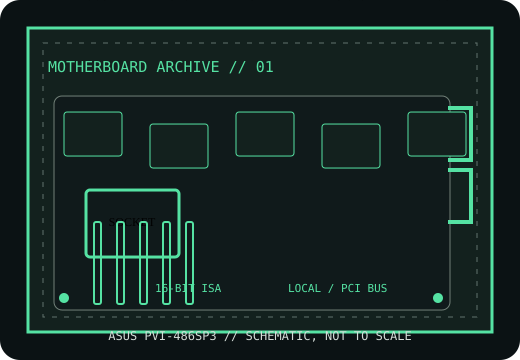

[ HISTORICAL SYSTEM BOARD // IDENTIFIED MODEL ]
ASUS PVI-486SP3
1994-era Socket 3 486 PCI system board. This record distinguishes the exact model from related variants and requires revision-matched documentation for service.

IDENTIFY THE PCB: Record model suffix, board revision, chipset markings, BIOS label and date codes before applying any family-level compatibility information.
Model specifications
| Exact model | ASUS PVI-486SP3 |
|---|---|
| Generation / chipset | 1994-era Socket 3 486 PCI system board; UMC 8881/8886-class PCI chipset family; confirm chipset markings on the actual PCB. |
| CPU socket / processor | Socket 3; 486SX/DX/DX2/DX4-family CPUs only when the board revision, voltage and clock jumpers, and BIOS support the exact part. |
| RAM technology / capacity | 72-pin SIMM FPM DRAM; up to 128 MB is reported for this family, subject to module density, bank layout and manual revision. |
| Form factor | Baby AT (confirm mounting and I/O shield against the board). |
| Bus, slots & I/O | PCI and 16-bit ISA expansion; IDE, floppy, serial, parallel and keyboard connections; slot count and optional headers are PCB-revision specific. |
| Jumpers / BIOS compatibility | Award-style BIOS family. CPU voltage, multiplier and bus clock use board jumpers; use the matching ASUS manual and BIOS image, not a similarly named PVI variant. |
Jumper, BIOS & compatibility notes
Do not infer 5 V/3.3 V CPU support from Socket 3 fit. Check the printed PCB revision, CPU voltage table, clock/multiplier jumpers and BIOS release before fitting a DX4 or upgrade chip.
Award-style BIOS family. CPU voltage, multiplier and bus clock use board jumpers; use the matching ASUS manual and BIOS image, not a similarly named PVI variant. Matching socket or connector geometry alone does not establish CPU, memory or firmware compatibility.
Safety & preservation
Use ESD protection; photograph jumper blocks and SIMM banks first. Inspect the coin-cell/NiCd battery area for leakage, socket contacts and electrolytic capacitors. Baby-AT P8/P9 power plugs must be oriented correctly (black wires together); never trial-power uncertain wiring.
Preserve provenance, original labels, jumpers and test conditions. Photograph the board before repair; avoid aggressive cleaning or desoldering until corrosion and component risks are documented.
Manufacturer and archive manuals
- ASUS PVI-486SP3 user manual — ManualsLibArchived copy of the model manual; use its CPU, DRAM, jumper and BIOS tables for the exact board revision.
- ASUS PVI-486SP3 manual archive — ManualOwlIndependent manual archive entry for the same model; compare illustrations and revision notes before applying settings.
Archived copies may cover another board revision. Compare manual diagrams and revision identifiers with the physical PCB; do not flash firmware or set voltage jumpers from a related model's manual.